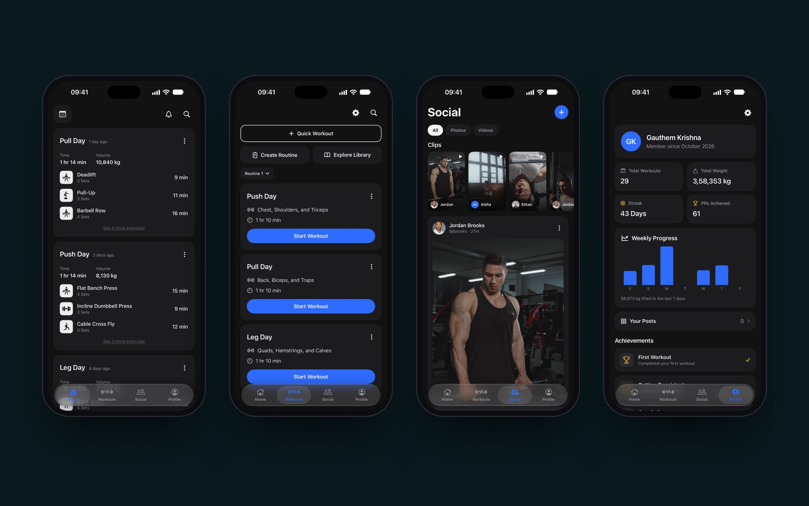
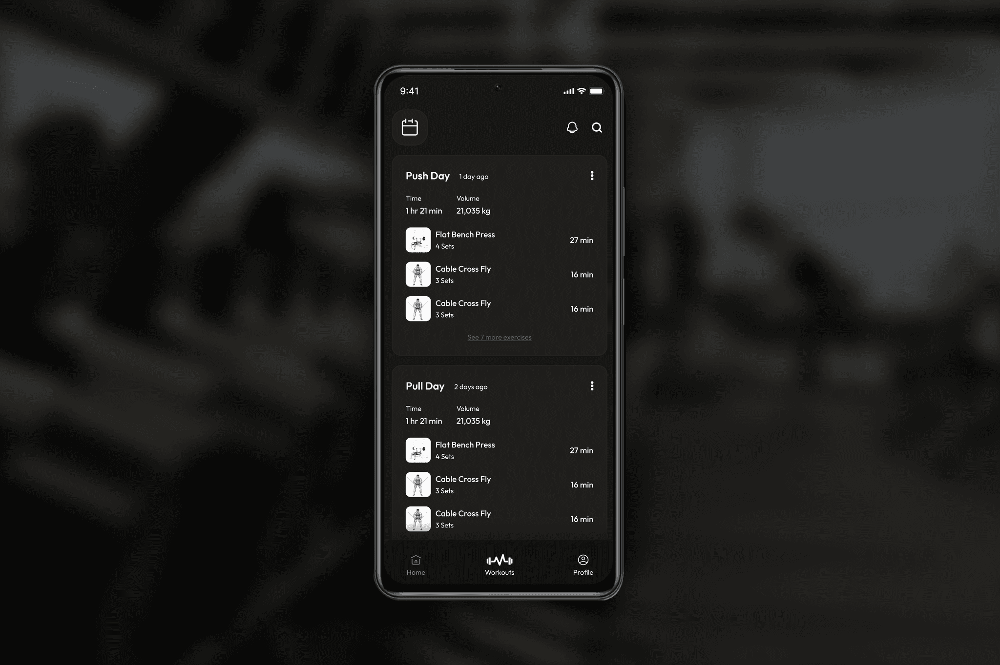
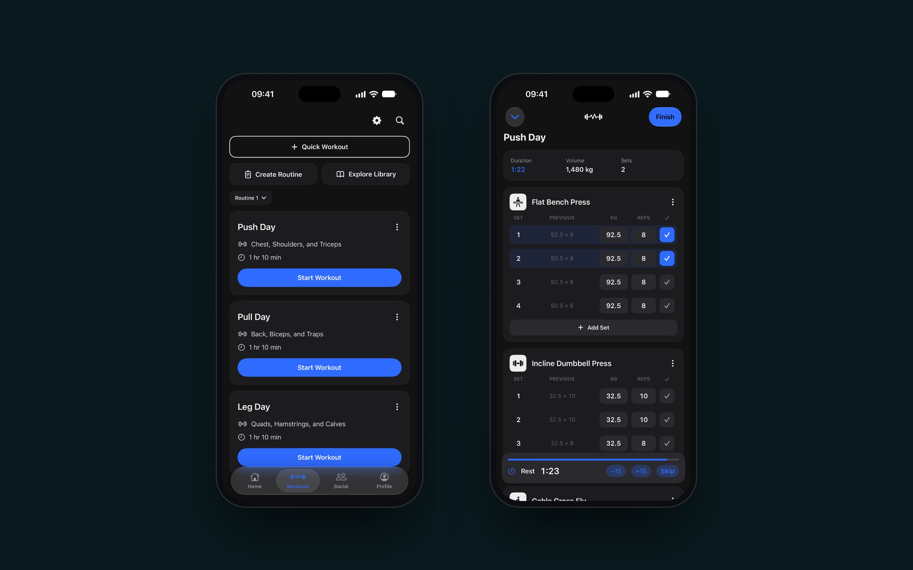
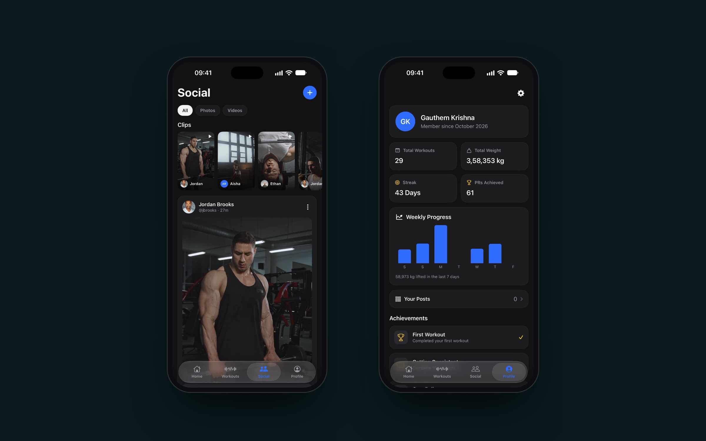
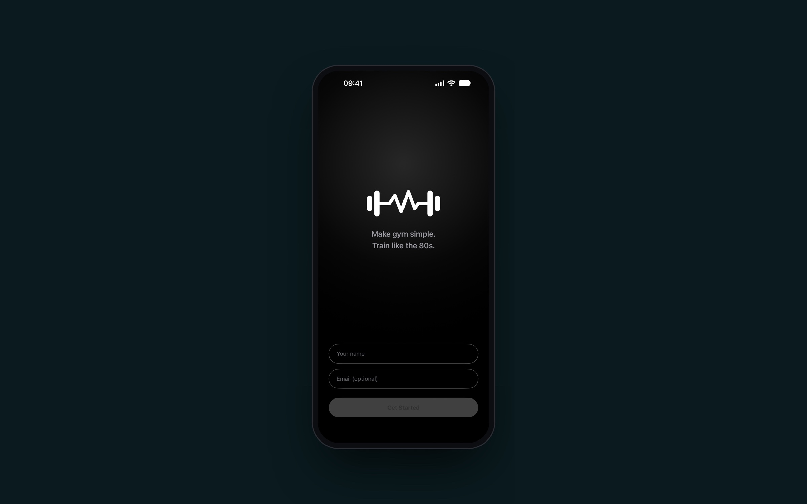

MinFit is the workout app I wanted and couldn’t find: dark, calm and built around one job, logging a session without friction. It started as a Figma concept and is now a native iOS app written in SwiftUI. It has four tabs, live set-by-set tracking, routines, progress charts, and a social feed of photo and video posts. I designed every screen and built the app end to end with Claude Code.

Problem Statement
Most workout apps are busy. Bright screens, upsells and nested menus get in the way at the one moment that matters: between sets, with sweaty hands and about 90 seconds to log what you just did. I wanted something closer to a paper logbook, the way people trained in the 80s, with just enough software to remember my numbers and keep me consistent.
Goals
- Make logging a set a single tap, with last session’s weight and reps already filled in.
- Keep the interface dark, quiet and readable in a gym, with large tap targets and one accent colour.
- Show progress honestly: volume, streaks, personal records and a simple weekly chart.
- Add a light social layer for motivation, without turning the app into a feed you scroll instead of training.
- Ship a real, native app instead of a prototype.
From Figma to Native

The first version was a Figma design with three tabs. Moving it into SwiftUI kept the card-based home, the logo and the dark palette. Building it for real changed a lot more:
- Four tabs instead of three: Social became a tab of its own once it was clear people train better with company.
- Logging became the centre: the static exercise list turned into a full live-workout flow with rest timing and a completion summary.
- Native details: a floating glass tab bar, haptic feedback on key actions, Swift Charts for progress and system pickers for photos and video.
Logging a Workout

- Routines: split days such as Push, Pull and Legs, each with target muscles and an estimated duration. Start any of them with one tap, or begin a Quick Workout from scratch.
- Live tracking: each exercise shows a table of sets with the previous session’s weight × reps beside it, and the inputs come pre-filled. Ticking a set adds it to the running duration, volume and set count at the top.
- Rest timer: ticking a set starts a rest countdown in a bar above the content, with −15 s, +15 s and Skip. The default rest length is set in Settings.
- Minimise and keep going: a workout can be collapsed into a banner above the tab bar, so you can check your history or the feed mid-session without losing anything.
- Exercise library and routine editor: browse exercises, build your own routines, and add or remove exercises and sets during a session.
- Finish: a completion screen sums up the session, and you can share it to the feed straight away.
Home, History and Progress
- Home: recent sessions as cards with time, total volume and the first exercises, with a calendar for going further back. Each card opens a full session breakdown.
- Profile: total workouts, total weight lifted, current streak and personal records, plus a weekly volume chart built with Swift Charts.
- Achievements: milestones such as First Workout, Getting Consistent (10 workouts) and Record Breaker (10 personal records) reward the habit rather than the numbers.
- Settings: kg or lbs, default rest time and profile details.
The Social Layer

- Feed: photo and video posts from people you train with, filtered by All, Photos or Videos, with likes and comments. Posts can carry the workout they came from.
- Clips: a row of short videos opens a full-screen vertical pager where only the visible clip plays. Landscape clips are letterboxed rather than cropped.
- Video that behaves: videos in the feed autoplay muted when most of the post is on screen and pause when it scrolls away.
- Posting: compose with the system photo picker, attach a workout and publish. You can delete your own posts, and comments and likes go with them.
- Built for real accounts: the feed runs on a service layer with two backends. One is a shared CloudKit feed using iCloud identity, so the server sets each post’s author and nobody can post as someone else. The other is a sample feed for development and demos. Likes and comments are stored as separate records so that each user only ever writes their own.
Design Highlights

- Near-black background (#121212) with slightly lighter cards (#1C1C1E) creates depth without borders or glow.
- One accent, a strong blue (#2F6BFF), marks everything you can act on: Start Workout, completed sets, the active tab.
- Numbers come first: weights, reps, time and volume are the largest text on every screen.
- Large, evenly spaced tap targets for sets and the rest timer, designed for use mid-workout.
- A floating tab bar that stays out of the way, with the active workout banner sitting just above it.
Building It with Claude Code
I designed MinFit and built it with Claude Code, working the way I run product teams: I set the direction, define the behaviour and review every screen; AI speeds up the path to working software.
- About 5,700 lines of Swift across 36 files, organised into App, Data, Design, Features and Models.
- A shared design system (one Theme file) so every screen uses the same colours, spacing and type.
- Swappable backends: the feed is written against one interface, so the app runs fully on sample data and switches to CloudKit through a single build setting.
- Tested in the simulator: each flow was exercised on iPhone simulators, including a two-device setup to check that posts, likes and comments sync between different accounts.
Outcome
MinFit went from a Figma concept to a native app I use for my own training. It logs a set in one tap, remembers every number and adds just enough social pull to keep me showing up. It is also proof of how I work now: product and design judgement up front, with AI collapsing the time from idea to a real app on a phone.
What’s Next
- Turn on the shared CloudKit feed in production and invite a first group of friends.
- Apple Health and Apple Watch support for heart rate and automatic workout logging.
- Progress charts for each exercise and smarter suggestions for when to add weight.
- A TestFlight beta, then the App Store.